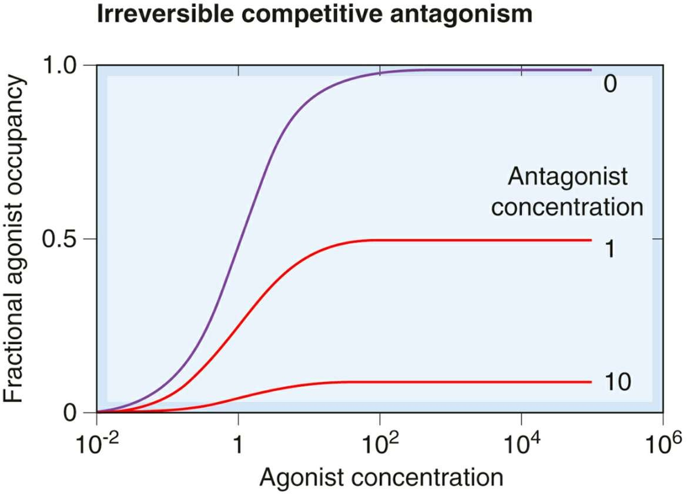
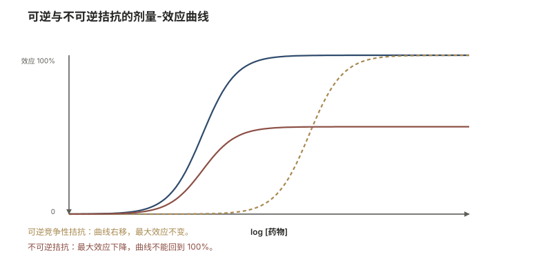

BIO105 · 第 9 章
药理学化学原理
Chemical Principles of Pharmacology
虚线下划线为术语；悬停查看中文、英文与释义，完整词典见“术语”。
本章目录
本讲把第 4 章的结合动力学改写成药理学的语言：占有度曲线、Kd 与 Scatchard 作图，再用效能与亲和力的分离解释拮抗剂、部分激动剂、反向激动剂与变构调节。
本章要点
- 药物是施加于生理系统并特异性改变其功能的化学物质；靶点主要是受体、酶、载体与离子通道。
- 占有度 PA = xA/(xA + Kd)，即 Hill-Langmuir 方程；Kd 是占据 50% 受体时的药物浓度。
- 放射性配体结合实验可区分特异性与非特异性结合；Scatchard 作图的斜率为 −1/Kd，横截距为 Bmax。
- 可逆竞争性拮抗使曲线右移而最大反应不变；不可逆拮抗降低最大反应。
- 完全激动剂与部分激动剂的差别在效能，不在亲和力。
- 反向激动剂降低受体的组成性活性；二态模型用 R 与 R* 的亲和力差异解释三类配体。
- 偏向性激动指同一受体偏好不同下游通路；变构药物结合在不同于正构位点的位置。
- 受体脱敏分两阶段：早期反应下降而受体密度不变，后期受体经内化从膜上消失。
9.1 药物靶点与“受体”这一大想法
讲义开篇引用 Rang（2006）的判断：受体概念是药理学的“大想法”（the big idea of pharmacology），并且会贯穿整门学科。这句话的分量在于，它把药理学从“经验性的药物清单”变成“可推理的分子科学”——有了受体，才能谈亲和力、效能、竞争与选择性。
先定义药物。讲义给出的定义是：药物是施加于生理系统、并以特定方式影响其功能的化学物质。这个定义有三个要素：它是化学物质（不是物理手段）；它作用于生理系统（不是离体反应）；它的作用具有特异性（specific way），而不是泛泛的毒性。
药物作用的靶点，讲义列出四类蛋白质（有少数例外）：
- 受体receptor：识别内源信号并转导为细胞反应；
- 酶enzyme：催化代谢反应，可被抑制或激活；
- 载体carrier：跨膜转运蛋白，可被阻断或“欺骗”；
- 离子通道ion channel：控制离子流动，可被开放或阻断。
这四类靶点在前面各章都已出现过：第 1 章的 K⁺ 通道、第 5 章的呼吸链酶、第 7 章的 GPCR、第 8 章的 Na⁺/K⁺ ATPase。药理学的任务，就是找到能特异性作用于其中某一类的分子。
L10 p.4–5
9.2 结合反应与 Hill-Langmuir 方程
讲义先复习第 4 章的蛋白-配体结合，再把符号换成药理学的写法。药物 A 与受体 R 的结合写作：
设药物浓度为 xA，受体总数为 Ntot，已结合数为 NA，则游离受体为 (Ntot − NA)。正反应速率为 k+1xA(Ntot − NA)，逆反应速率为 k−1NA。平衡时两者相等：
定义占有度occupancy PA = NA/Ntot，整理得：
这就是 Hill-Langmuir 方程Hill-Langmuir equation。它与第 4 章的 Y = [L]/([L] + Kd) 是同一个式子，只是把“分数饱和度”换成了“占有度”。
曲线的形状是对称的 S 形（symmetrical sigmoid）。在线性坐标下，它看起来像一条从 0 升到 1 的双曲线；在对数坐标下，它变成以 Kd 为中心对称的 S 形。这个差别很重要：药理学的剂量-效应曲线几乎都画在对数坐标上，因为药物的有效浓度往往跨越几个数量级。
Kd 的三个性质必须记住：它是药物与受体的特征常数（由两者共同决定，不由实验条件决定）；它具有浓度的量纲；它等于平衡时占据 50% 位点所需的药物浓度。因此读图时，S 形曲线的中点对应的横坐标就是 Kd。
Clean vector figure with two panels: left panel plots fractional occupancy PA from 0 to 1 against drug concentration on a linear axis showing a rectangular hyperbola; right panel plots the same data on a logarithmic concentration axis showing a symmetrical sigmoid centred on Kd, with a dashed line at 50 percent occupancy meeting the curve at the labelled Kd. Flat 2D line art, thin 1.5 px strokes, muted slate blue and warm grey palette, white background, English labels, no cartoon, no gradient, no shadow.
L10 p.6–10
9.3 受体结合测定与 Scatchard 作图
如何实验测定 Kd？讲义给出经典的三步放射性配体结合法：
- 放射性标记的药物既结合到特异性位点（受体），也结合到非特异性位点（膜脂、其他蛋白）；
- 逐渐提高放射性药物浓度，特异性位点会被饱和，而非特异性结合仍随浓度线性上升；
- 加入过量非放射性药物，把放射性药物从特异性位点竞争下来（置换），剩下的信号即为非特异性结合。
第三步是关键：只有“能被过量冷配体置换掉”的那部分才是特异性结合。用总结合减去非特异性结合，就得到一条饱和曲线，其形状与 Hill-Langmuir 方程吻合，从而可读出 Bmax 与 Kd。
为了让读数更可靠，常用线性化方法。Scatchard 作图Scatchard plot把 PA = B/Bmax 代入方程并整理：
以 B/xA（或写作 B/free）对 B 作图，得到一条直线：斜率为 −1/Kd，横截距为 Bmax，纵截距为 Bmax/Kd。因此一次作图就能同时得到两个参数——这是 Scatchard 图的价值所在。
需要注意它的局限：线性化会放大高浓度点的误差，而且当受体存在正协同或负协同（多位点）时，图线不再是直线而会弯曲。讲义只给出单一位点的直线情形，考试也按此处理。
L10 p.11–14
9.4 两种药物竞争同一受体
当两种药物 A 与 B 结合同一受体时，情况变复杂：游离受体数变为 (Ntot − NA − NB)。对 A 与 B 分别写出平衡：
两式相除，得到结合量的比例关系：
再代入占有度定义，得到含两种药物的 Hill-Langmuir 方程：
与单药情形相比，分母多了一项 xB/KB。这一项就是“竞争者施加的压力”：B 的浓度越高、亲和力越强（KB 越小），A 的占有度就被压得越低。
这个式子是理解竞争性拮抗的数学基础。如果 B 是拮抗剂（本身不产生反应，只占位），那么增加 B 的浓度会使 A 的剂量-效应曲线右移；要恢复同样的占有度，必须提高 A 的浓度。右移的幅度取决于 xB/KB——这正是下一节 Schild 分析要量化的东西。
L10 p.15–17
9.5 可逆与不可逆竞争性拮抗
讲义用两条实测曲线说明两类拮抗的差别。第一类是可逆竞争性拮抗：以异丙肾上腺素（isoprenaline，激动剂）与普萘洛尔（propranolol，拮抗剂）在离体豚鼠心房上的实验为例，随着拮抗剂浓度升高，激动剂的浓度-效应曲线逐步右移，而斜率与最大反应都不变。原因是拮抗剂可以被更高浓度的激动剂“挤走”——竞争是可逆的，因此只要激动剂足够多，总能达到同样的最大效应。
第二类是不可逆竞争性拮抗。讲义给出两个例子：大鼠脑神经元上，阿片受体（GPCR）激动剂 normorphine 在接触不可逆拮抗剂 β-芬太尼胺（β-funaltrexamine, β-FNA）30 分钟并洗去后，最大反应显著下降；豚鼠回肠上，组胺受体（GPCR）在接触受体烷化剂 GD121 5 分钟并洗去后，同样无法达到原来的最大反应。
为什么洗去拮抗剂后仍不能恢复？因为不可逆拮抗剂与受体形成共价键，受体被永久失活。剩下的受体数目减少，因此即使用饱和浓度的激动剂，也只能占据剩余受体，最大反应按比例下降。讲义的原话是：不可逆拮抗剂的作用很强，无法达到完全的激动剂占有。
两类拮抗的判别标准可以总结为一张对照：
- 可逆竞争：曲线右移，Emax 不变，Kd 表观增大；增加激动剂可克服。
- 不可逆竞争：曲线右移且 Emax 下降；增加激动剂不能完全克服。
定量上，可逆拮抗的强度用 Schild 作图Schild plot测定。定义剂量比 rA = x′A/xA（有拮抗剂时达到同样效应所需的激动剂浓度 ÷ 无拮抗剂时的浓度），则
以 log(rA − 1) 对 log xB 作图，斜率为 1，横截距给出 KB。讲义给出普萘洛尔的实测值：KB = 2.2 × 10−9 mol/L。这个数字是判断拮抗剂亲和力的直接指标。



绘图提示词
Clean vector figure with two panels sharing axes of response percentage against log agonist concentration: left panel shows three curves shifted progressively to the right by increasing reversible antagonist while all reach the same maximum; right panel shows three curves where increasing irreversible antagonist lowers the maximum response progressively with little shift. Flat 2D line art, thin 1.5 px strokes, muted slate blue and warm grey palette, white background, English labels, no cartoon, no gradient, no shadow.
L10 p.19–26
9.6 完全激动剂与部分激动剂
讲义用兔主动脉条的实验说明“效能”这一维度。苯肾上腺素（phenylephrine）是完全激动剂（full agonist），能使血管条收缩到最大；羟甲唑啉（oxymetazoline）、可乐定（clonidine）、萘甲唑啉（naphazoline）与妥拉唑啉（tolazoline）是部分激动剂（partial agonist），各自能达到的最大收缩不同，但都低于苯肾上腺素。肾上腺素（epinephrine/adrenaline）也是完全激动剂。
这里的关键概念是效能efficacy与亲和力affinity的分离。部分激动剂可以拥有很高的亲和力（Kd 很小，低浓度就占据受体），但效能低（占据后只能产生较弱的下游反应）。因此“结合得好”不等于“激活得强”——这是药理学与单纯结合化学的分水岭。
讲义进一步指出：部分激动剂结合在正构位点（orthosteric / isosteric site），而不是变构位点。也就是说，它与完全激动剂争夺同一个口袋，只是占据后不能把受体完全推向活性构象。
由此产生一个可预测的现象：在部分激动剂存在时，完全激动剂的剂量-效应曲线会右移且最大反应降低。原因是部分激动剂占据了部分受体，且其内在效能低；完全激动剂必须与它竞争剩余位点，而已经结合的部分激动剂无法产生完全反应。这与不可逆拮抗的图形相似，但机制不同——前者是“占了位但激活不全”，后者是“受体被永久破坏”。
L10 p.28–31
9.7 反向激动剂与二态模型
有些受体在没有配体时就具有基础的活性，称为组成性活性constitutive activity。对这类受体，配体不只是“开”或“关”，还可以把基础活性压低——这就是反向激动剂inverse agonist。
讲义用 5-HT1c 受体（GPCR）作例子，给出三类配体的实测曲线：血清素（5-HT）与 5-甲酰胺基色胺（5-carboxamidotryptamine）是激动剂，提高反应；螺哌隆（spiperone）是反向激动剂，把反应降到基础水平以下；WAY 100635 是拮抗剂，本身不改变基础反应，但能阻断上述两类配体的作用。三者的结合位点相同（shared binding sites）。
解释这套现象的框架是二态模型two-state model。受体在两种构象之间平衡：
- R：非活性构象；
- R*：活性构象，能激活下游 G 蛋白。
三类配体的差别在于对两种构象的相对亲和力：
- 激动剂对 R* 的亲和力高于 R，因此结合后把平衡推向 R*，活性升高；
- 反向激动剂对 R 的亲和力高于 R*，把平衡推向 R，活性降低；
- 拮抗剂对 R 与 R* 的亲和力相等，因此不改变平衡，只是占据位点、阻止其他配体结合。
这个模型的优雅之处在于：它用同一个变量（相对亲和力）解释了三种看似相反的行为。它也解释了为什么“拮抗剂”在中性受体上看起来“没有作用”——它确实没有改变平衡，只是挡住了别人。
Clean vector diagram of the two-state receptor model: two receptor shapes labelled R inactive and R star active in equilibrium with curved arrows between them, an agonist shown binding preferentially to R star and shifting the equilibrium right, an inverse agonist binding preferentially to R and shifting it left, and an antagonist binding both forms equally with no shift. Flat 2D, thin 1.5 px strokes, muted slate blue and warm grey palette, white background, English labels, no cartoon, no gradient, no shadow.
L10 p.32–35
9.8 偏向性激动与变构调节
传统模型假设：一个受体被激活后，所有下游反应按固定比例一起出现。讲义把这种情形称为常规激动（conventional agonism）：受体偶联到两条胞内反应（response 1 与 response 2），不同激动剂以相似方式同时激活两者。
偏向性激动biased agonism打破了这一假设。讲义给出的定义是：两个激动剂结合在受体的同一位点，但红色的激动剂更擅长引发 response 1，绿色的激动剂更擅长引发 response 2。也就是说，配体不仅决定“激活多少”，还决定“激活哪条通路”。
这一现象的药理学意义很大：如果某个受体的两条通路中，一条治疗有益、另一条产生副作用，那么理想的药物应该是“偏向”有益通路的激动剂，而不是全面激活。这就把药物设计从“开关”升级为“调向”。
另一类调控是变构调节allosteric modulation。讲义用构词法解释两个词：
orthosteric = ortho（正）+ steric（位点）→ 相同的位点
变构药物结合在受体上不同于传统激动剂的位置，通过改变受体的构象来影响正构配体的亲和力或效能。由于结合位点不同，它不必与内源配体直接争夺同一个口袋；这也是“变构”一词的字面含义。这一机制与 9.6 节“部分激动剂结合正构位点”形成对照——两者都产生“次最大”效应，但机制完全不同。
L10 p.36–38
9.9 受体脱敏：两阶段的时间过程
讲义用青蛙运动终板的实验展示受体的“疲劳”。用微电极短脉冲给予乙酰胆碱（ACh），每次产生一个短暂的去极化（向上的偏转）；若给予一个长脉冲（图中水平线），反应会逐渐衰减，时间过程约 20 秒，随后可以恢复。这种现象称为脱敏desensitisation。
脱敏分两个阶段，讲义用两条曲线区分：
- 早期阶段：反应下降，但受体密度不变（图中红线）。这是受体本身被磷酸化或构象改变而失活，受体仍在膜上。
- 后期阶段：反应继续下降，伴随受体从膜上消失——通过内化internalisation进入胞内（图中绿线与橙线表示恢复过程）。
讲义用大鼠胶质瘤细胞（glioma cells）的 β-肾上腺素受体（GPCR）实验证明这一点：加入异丙肾上腺素后，受体密度随时间下降，同时腺苷酸环化酶（adenylyl cyclase）的反应减弱。两条曲线的时间尺度不同——功能下降快于受体数目下降，正好对应“先失活、后内化”的两阶段模型。
这一机制揭示了受体并非“开关式”的静态元件，而是随时间调整自身丰度与敏感度的动态系统。讲义把脱敏、内化、偏向性激动并列在总结中，正是强调受体行为的时间维度：同一个受体在不同时间尺度上可以表现出不同的药理学性质。
讲义最后用五条总结收束全讲：药物主要作用于四类靶蛋白（受体、离子通道、酶、载体）；蛋白结合遵循化学动力学，分数占有度解释剂量-效应关系；激动剂与拮抗剂（可逆/不可逆、完全/部分、反向）在效能与受体相互作用上不同；药物可竞争正构位点或作用于变构位点以改变亲和力/效能；受体行为随时间改变，包括脱敏、内化与偏向性激动。
L10 p.39–41